基于 10,218,360 条用户行为记录的深度分析 + 运营策略建议
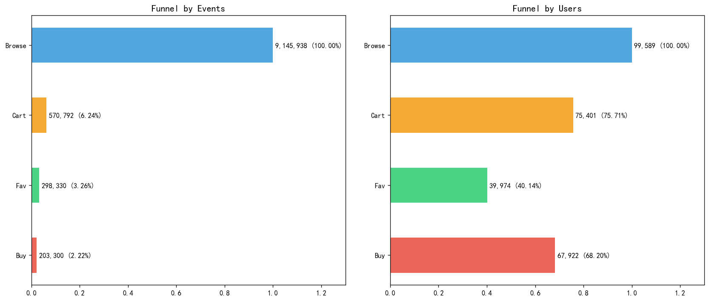
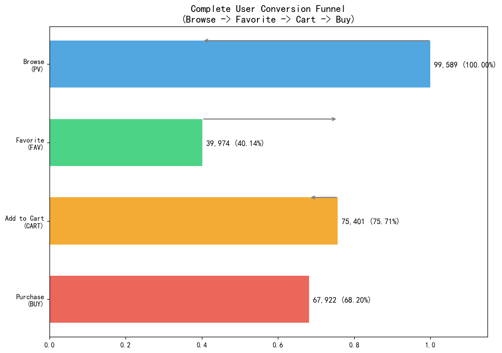
| 环节 | 用户数 | 转化率 | 流失率 | 说明 |
|---|---|---|---|---|
| Browse (PV) | 99,589 | 100% | — | 所有用户起点 |
| Favorite (FAV) | 39,974 | 40.1% | 59.9% | 仅四成用户使用收藏 |
| Add to Cart (CART) | 75,401 | 75.7% | — | 多于收藏用户，跳过收藏环节 |
| Purchase (BUY) | 67,922 | 90.1% (CART→BUY) | 9.9% | 加购后购买率极高 |
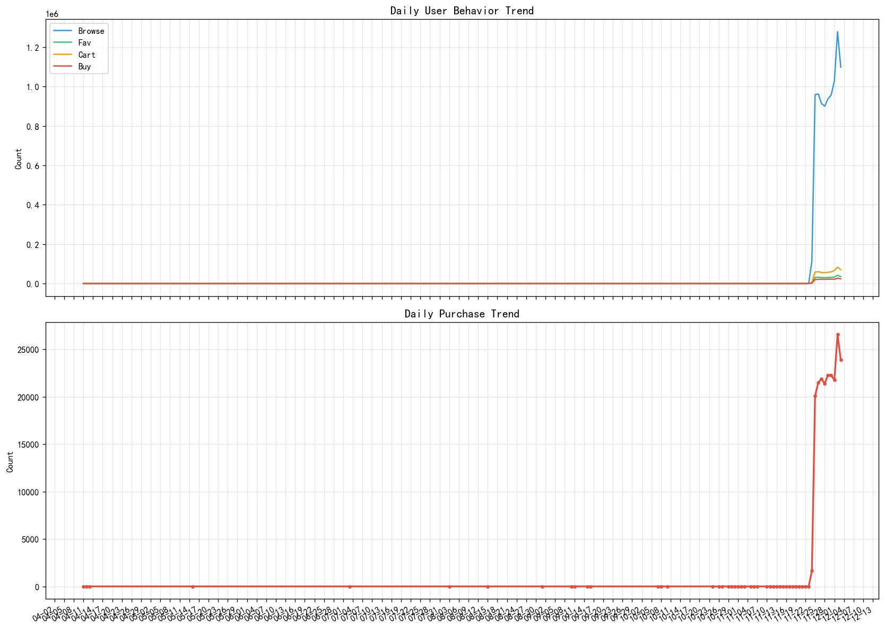
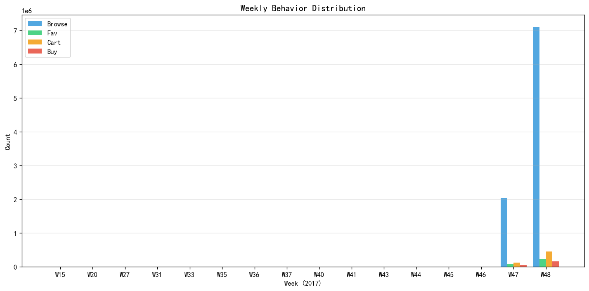
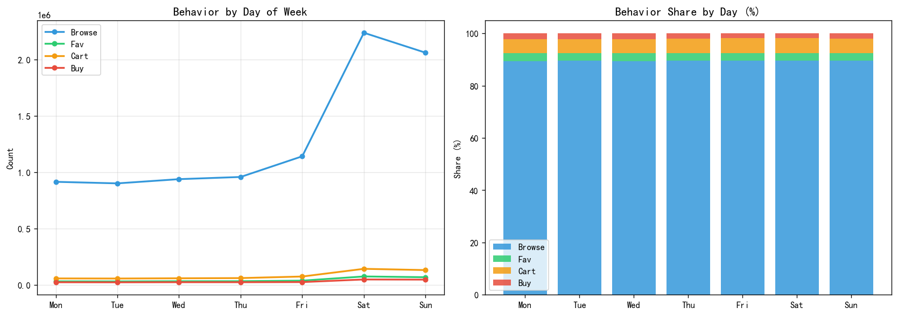
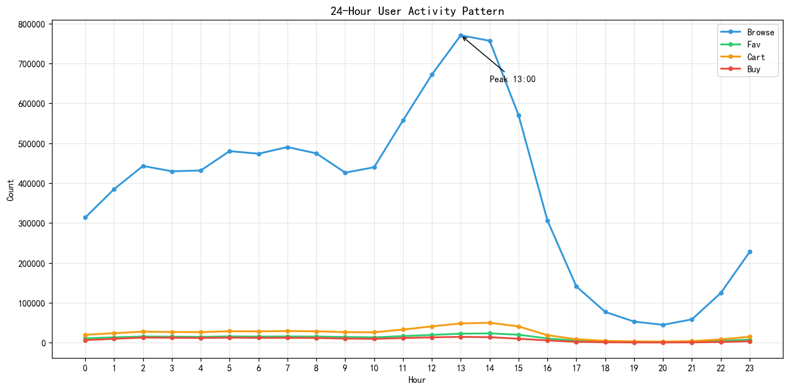
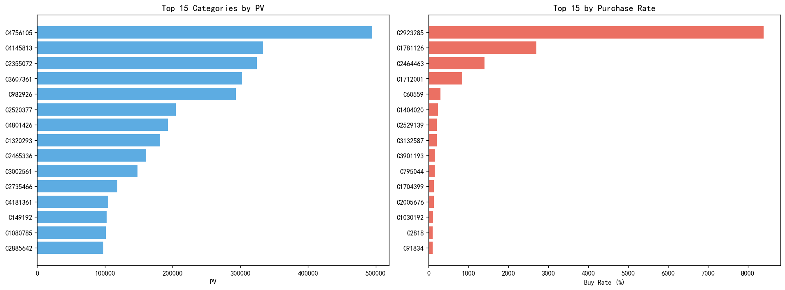
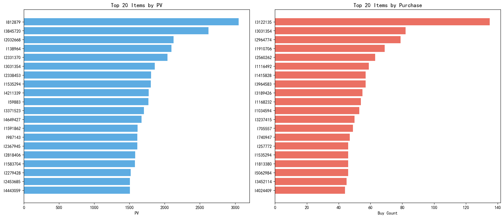
| 类目ID | 总行为数 | 整体购买率 | 转化评级 |
|---|---|---|---|
| 4145813 | 367,496 | 7.7% | ▲ 最优 |
| 4756105 | 537,506 | 5.9% | ▲ 高 |
| 982926 | 321,263 | 5.3% | ▲ 中高 |
| 3607361 | 321,879 | 3.2% | ● 中 |
| 2355072 | 347,297 | 2.9% | ▼ 低 |
| 2520377 | 321,242 | 2.7% | ▼ 最低 |
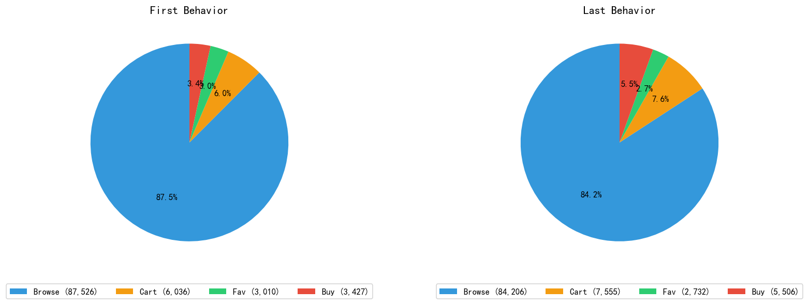
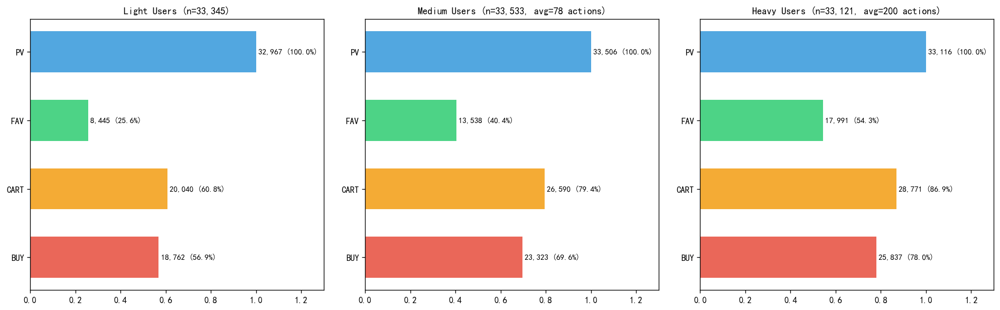
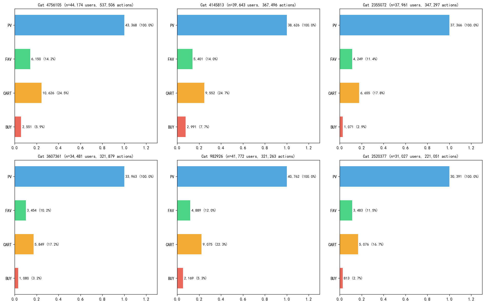
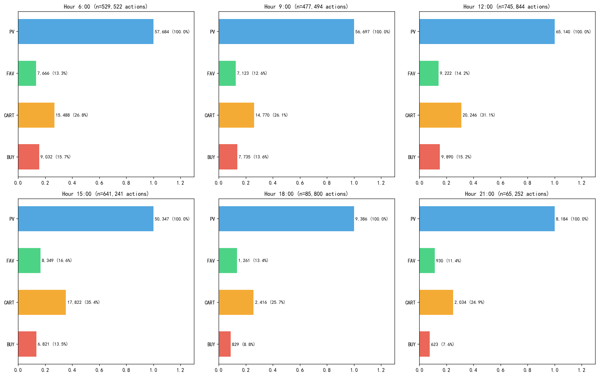
加购用户的购买率高达 90.08%，应优化加购流程：
• 加购后即时推送库存紧张/降价提醒
• 购物车页添加"一键结算"快速入口
• 对加购未购买用户在 2 小时内发送定向提醒
浏览→加购转化率 75.7% 仍有提升空间：
• 商品详情页增加"限时折扣倒计时"
• 首屏展示"购买此商品的用户还看了"推荐
• 低客单价商品提供"满减凑单"引导
• 12:00-14:00 午间高峰：推送限时闪购、热门推荐
• 06:00-08:00 清晨高转化时段：推送前日加购/收藏商品降价
• 18:00-20:00 晚高峰转化低：避免强推购买，改为种草内容
• 高转化类目（7.7%）：加大曝光和流量倾斜，优化推荐位
• 低转化类目（2.7%）：优化商品详情页、用户评价质量
• "只看不买"类目：增加视频展示、VR 看货等沉浸体验
• 轻度用户：降低首次加购门槛，推送新人专享优惠
• 中度用户：收藏提醒 + 个性化推荐提升复购
• 重度用户：VIP 权益 + 预售优先 + 社群运营
• 构建实时漏斗监控看板（PV→CART→BUY）
• 建立用户活跃度标签体系（Light/Medium/Heavy）
• 设置核心指标预警：CART→BUY 转化低于 85% 时触发
| 检查项 | 结果 | 处理方式 |
|---|---|---|
| 空值检查 | 无空值 | 所有字段完整 |
| 重复值 | 5 条重复 | 已去重（全部为 buy 行为，可能因网络重试产生） |
| 时间戳异常 | 279 条异常 | 已删除（负时间戳、未来时间戳、早于/晚于数据区间的记录） |
| 行为类型 | 全部有效 | 仅含 pv/fav/cart/buy 四种标准行为 |